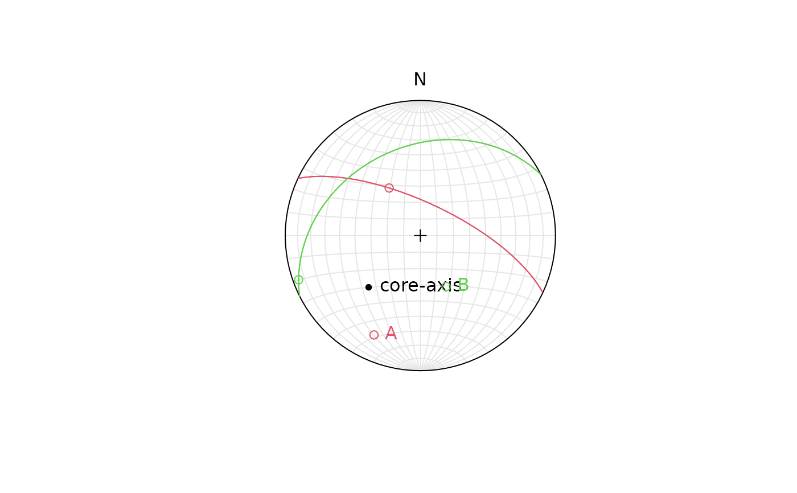

Orientation of structures from drill core orientation angles
Source:R/alphabeta.R
drillcore_orientation.RdCalculates the orientation of a plane or line from internal core angles ( alpha, beta, and gamma) of oriented drill cores
Arguments
- azi
numeric. Azimuth of drill core axis orientation in degrees (measured clockwise from North).
- inc
numeric. Inclination of drill core axis in degrees (Note: negative values for downward).
- alpha
numeric vector. Alpha angle in degrees
- beta
numeric vector. Beta angle in degrees
- gamma
numeric. (optional). Gamma angle in degrees
Examples
azi <- 225
inc <- -45
drillcore_orientation(azi, inc, 60, 320)
#> Plane object (n = 1):
#> dip_direction dip
#> 25.00392 70.02959
drillcore_orientation(azi, inc, 45, 220)
#> Plane object (n = 1):
#> dip_direction dip
#> 333.24890 34.77544
# multiple alpha-beta measurements
plot(Line(azi, -inc), lab = "core-axis")
res <- drillcore_orientation(azi, inc, alpha = c(60, 45), beta = c(320, 220))
points(res, col = 2:3)
text(res, labels = c("A", "B"), col = 2:3, pos = 4)
